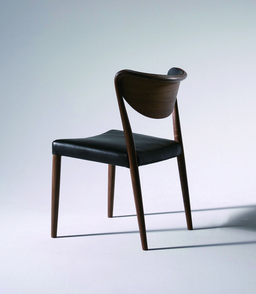
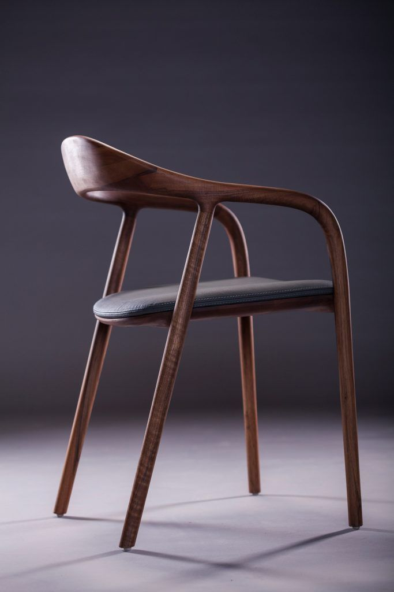
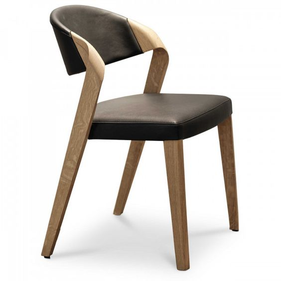

|  |  |  |
|---|---|---|
| Stuhl Xenia | Stuhl Fenja | Stuhl Malek |
Ein Stuhl ist den unterschiedlichsten Beanspruchungen ausgesetzt. Fachwissen und sorgfältigste Verarbeitung gewährleisten einen bedenkenlosen Einsatz. Unsere Stühle erfreuen sich wegen ihrer Langlebigkeit und dem außergewönlichen Design größter Beliebtheit